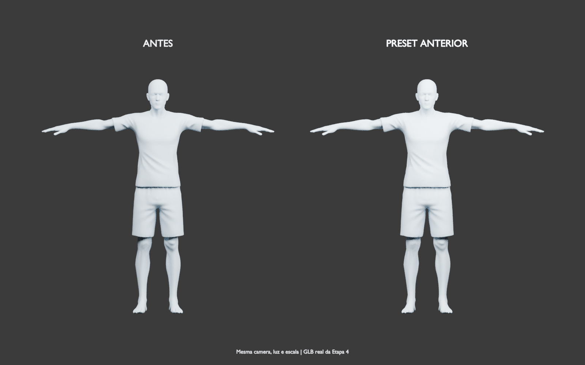
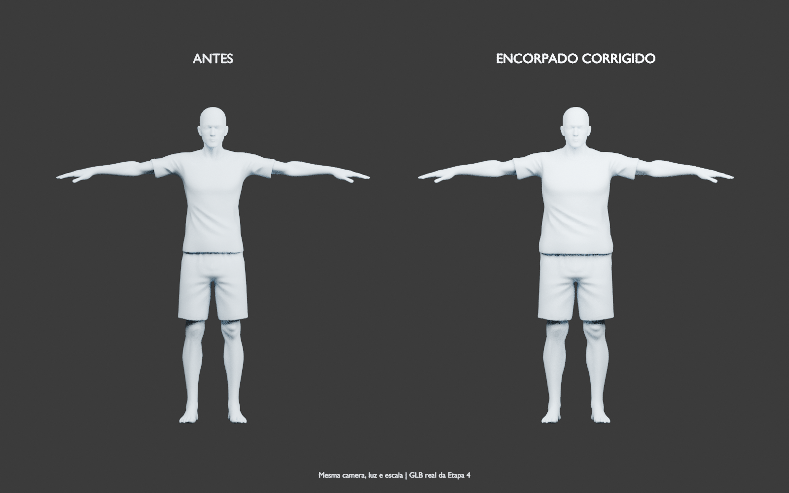
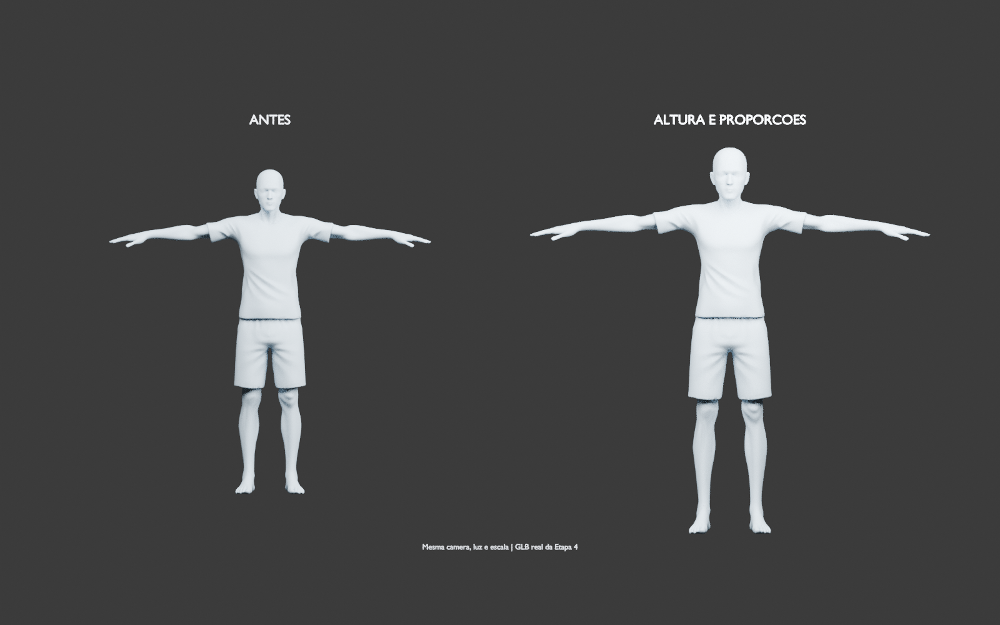
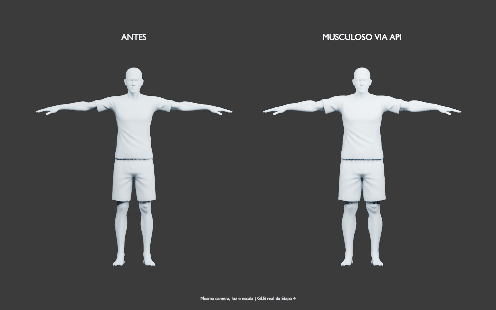

Corpo · Etapa 4
Comparações do modelo riged-decimate.fbx. Cada par usa a mesma câmera, luz e escala, sem reenquadrar o personagem após a alteração. As imagens foram renderizadas a partir dos GLBs reais; o material neutro facilita a inspeção da silhueta.
1. Resultado anterior: mudança pouco perceptível

2. Encorpado: cobertura e intensidade corrigidas
Todos os ossos da coluna participam da deformação do tronco. O mesmo preset agora altera visivelmente a silhueta.

3. Altura e proporções
Altura 110%, cabeça 115%, larguras 112% e comprimentos 108%. A câmera mantém a escala para tornar as diferenças visíveis.

4. Musculoso: aplicação pelo servidor da interface
Preparação, aplicação, acompanhamento por WebSocket e download da prévia passaram pela API local.

Estas são renderizações de validação dos arquivos, não capturas do navegador. Não havia navegador conectado para automatizar a inspeção da tela. A geometria também foi avaliada pelo GLTFLoader e pelo cálculo de deformação do Three.js usado na aplicação.
Relatório e comandos para repetir os testes